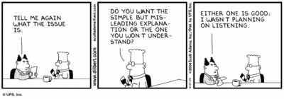
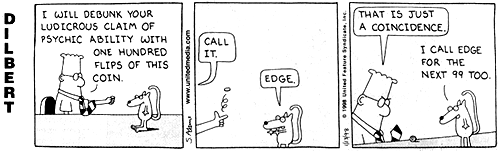
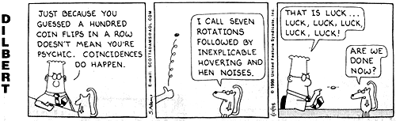
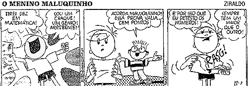
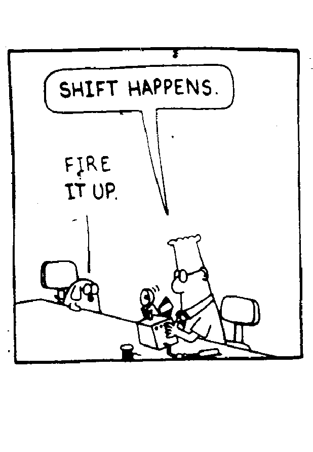

| 2º semestre de 2008 | sala: PC07 | Horário: 3ª 13:30 e 6ª 15:30 |
| Objetivos: Apresentar os fundamentos das técnicas probabilísticas usadas em projetos de algoritmos e teoria da computação. |
;
Classes de complexidade de algoritmos aleatorizados.
|  | Para uma resenha do assunto da disciplina: A Taste of Randomized Computations, Oded Goldreich. |
Carga horária: 60. Créditos: 4. Responsável: Jair Donadelli.
Bibliografia:
Bibliografia complementar:
Material na web:


| trabalhos + seminarios |
 |
|
 |
February 2008 March 2008 April 2008
Su Mo Tu We Th Fr Sa Su Mo Tu We Th Fr Sa Su Mo Tu We Th Fr Sa
1 2 1 1 2 3 4 5
3 4 5 6 7 8 9 2 3 4 5 6 7 8 6 7 8 9 10 11 12
10 11 12 13 14 15 16 9 10 11 12 13 14 15 13 14 15 16 17 18 19
17 18 19 20 21 22 23 16 17 18 19 20 21 22 20 21 22 23 24 25 26
24 25 26 27 28 29 23 24 25 26 27 28 29 27 28 29 30
30 31
May 2008 June 2008 July 2008
Su Mo Tu We Th Fr Sa Su Mo Tu We Th Fr Sa Su Mo Tu We Th Fr Sa
1 2 3 1 2 3 4 5 6 7 1 2 3 4 5
4 5 6 7 8 9 10 8 9 10 11 12 13 14 6 7 8 9 10 11 12
11 12 13 14 15 16 17 15 16 17 18 19 20 21 13 14 15 16 17 18 19
18 19 20 21 22 23 24 22 23 24 25 26 27 28 20 21 22 23 24 25 26
25 26 27 28 29 30 31 29 30 27 28 29 30 31
1 Probabilidade discreta
2 Identidade polinomial
3 Probabilidade condicional e Independência
4 Espaço produto
5 Identidade polinomial revisitada
6 Igualdade do produto de matrizes
7 Teorema de Bayes
8 Sigilo perfeito
9 Filtros anti-Spam
10 Variáveis aleatórias discretas
11 Distribuições de Bernoulli, binomial, geométrica e uniforme
12 MAX 3-SAT
13 Quicksort aleatorizado e Análise de caso médio
14 Gerador de prováveis primos
Modelos de Computação.
15 Máquinas de Turing; Circuitos booleanos; RAM; Algoritmos aleatorizados. M.T. probabilística off-line
16 Classes de complexidade
17 BPP está na Hierarquia Polinomial
18 Desaleatorização de BPP usando geradores pseudoaleatórios
19 Construções de sequencias k-a-k independentes
20 Hash Universal
21 Grafos expansores e redução eficiente de erro
22 Desigualdades, desvios e momentos
23 Grandes desvios
24 Existência de PRGs
25 Cupon Collector, Balls and bins
26 Estruturas de dados. Treap e Skip lists
27 Hashing
Algortimos distribuídos aleatorizados
28 O Jantar dos Filósofos
29 Eleição de Líder
30 Generais Bizantinos